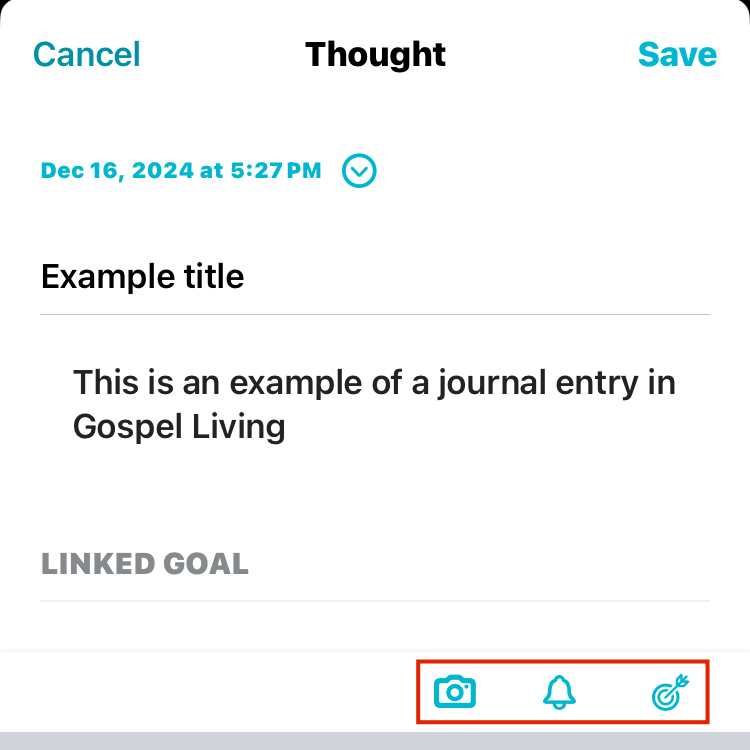
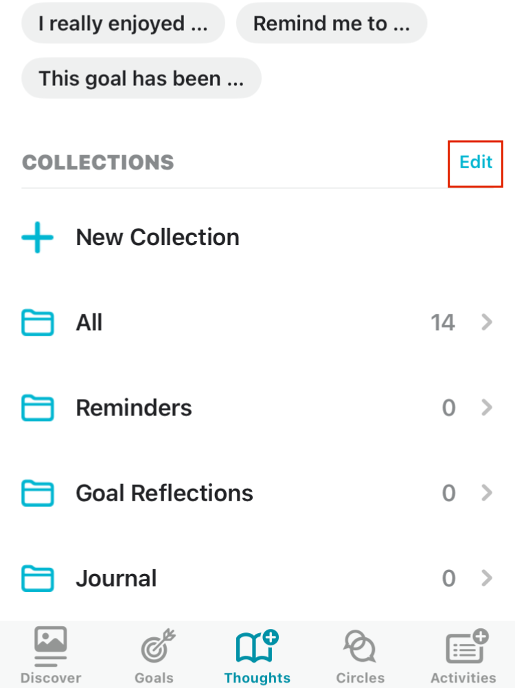
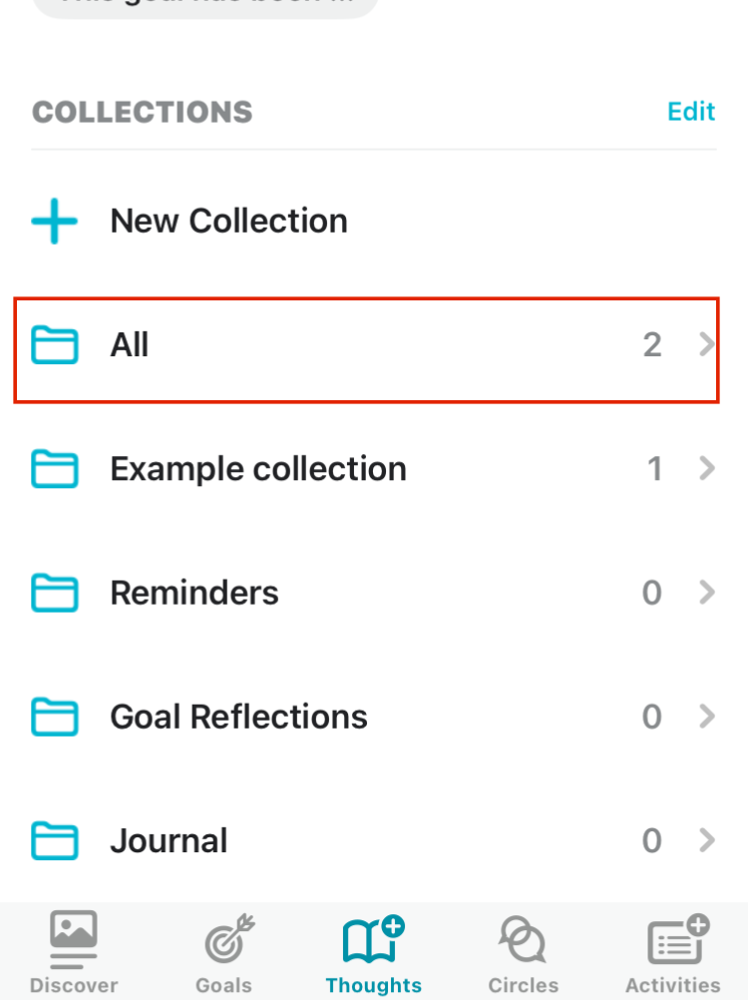
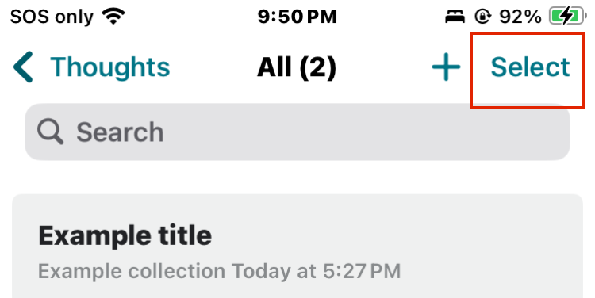
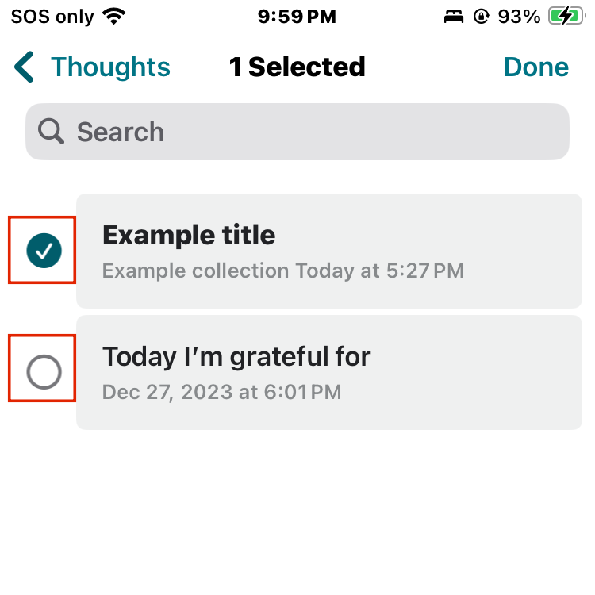
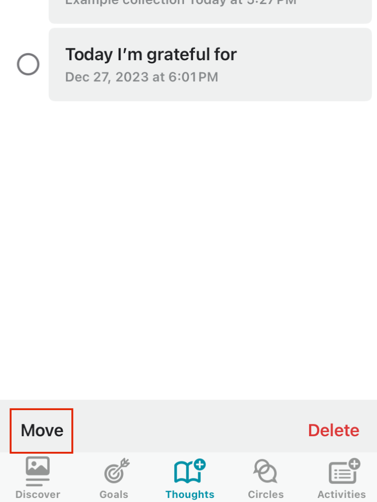
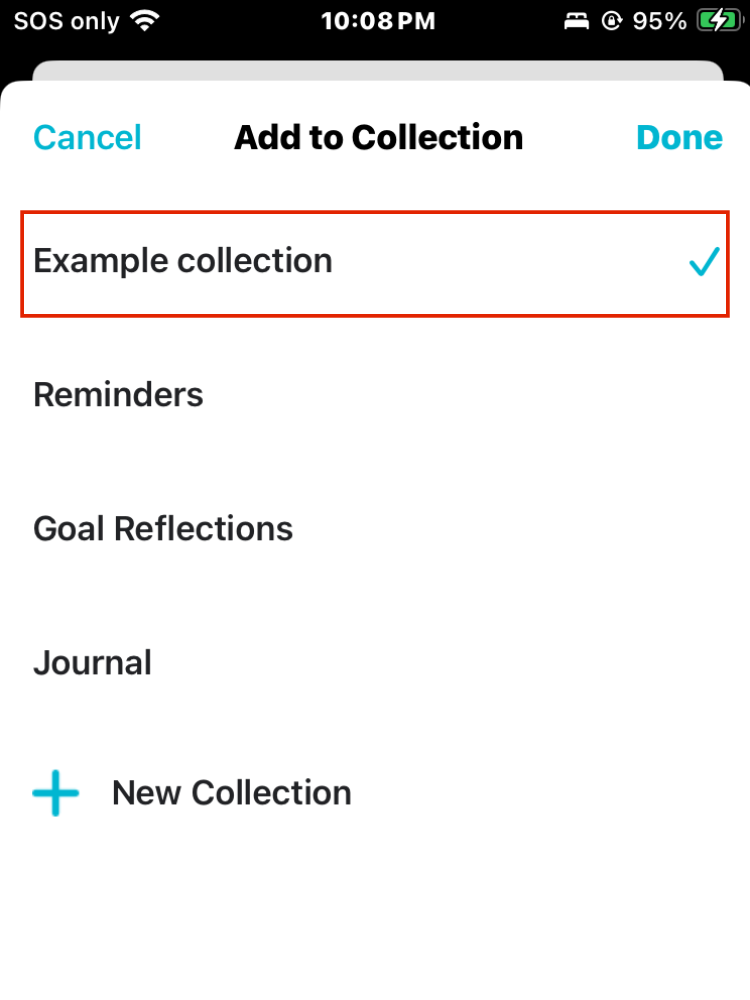
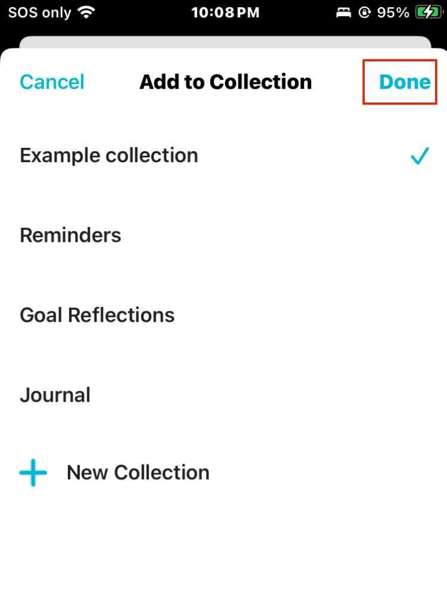

The Thoughts section is a place to journal and record thoughts and impressions.

Recording thoughts
- Select Create New or select a prompt to start journaling.
You can also add pictures to your journal by tapping Add Photos or the camera icon in an opened entry.

- Add any photos, reminders or link other goals with the corresponding icons.
- Select Save when finished.
Tip: If you have a goal relating to journaling, you can link entries here and they will be visible from the Goals section also.

Collections
This is where you can find your journal entries. They can be organized into folders called Collections. By default, all entries are put into the All folder.
- Add a new Collection by selecting New Collection. Then, add a title and select the blue Save button.
- Rename, edit and delete Collections with the blue Edit button. 
Moving thoughts to and from Collections
By default, all entries are put into the All folder.
If you'd like to move entries to a different Collection start by selecting All (or any Collection you'd like to move entries from)
Then tap Select in the top right corner.
Select the entries your would like to move.
Select Move located at the bottom of the screen.
Select the Collection you'd like to move your entries to.
Select Done to save the change.
Tip: You can also add a thought straight to a collection with the + icon so you don't have to go back and re-organize them later.